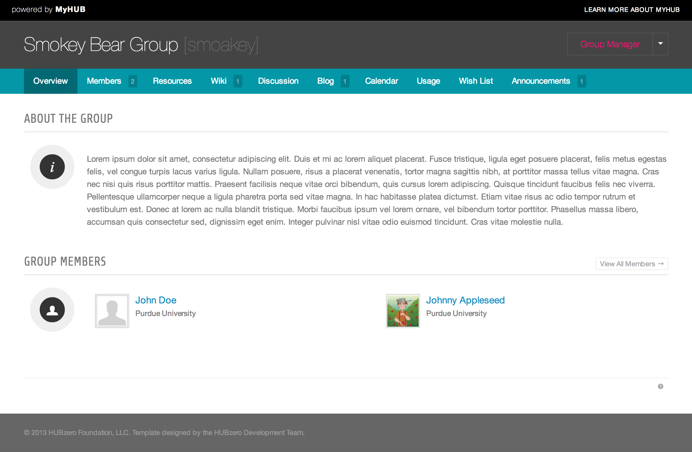
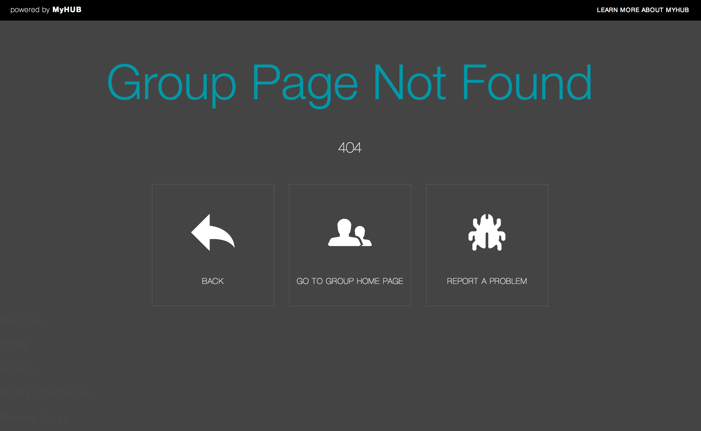
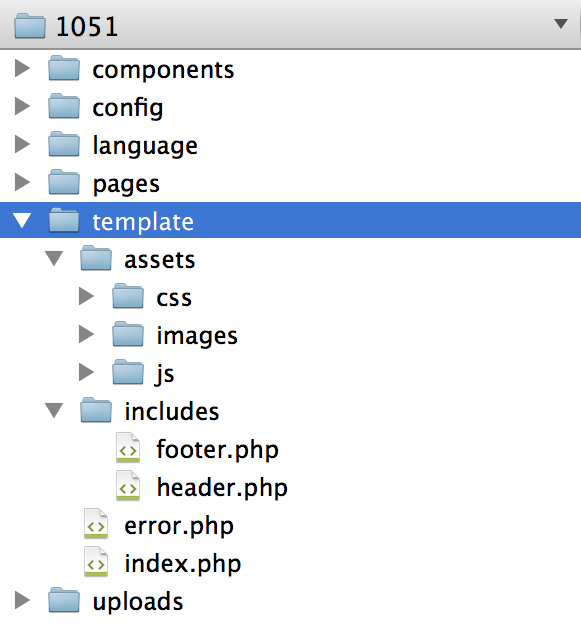

Developers
Templating system
A super group renders through a template of its own instead of the site
template. The template is ordinary PHP with a handful of <group:include>
tags in it, and it lives in the group's template/ directory.
The one required file
app/site/groups/<gidNumber>/template/index.php
That is the only file a super group template needs. Everything else — the error page, the includes, the stylesheets — is convention.
How the file is chosen
Components\Groups\Helpers\Template::_fetch()
builds a list of candidates and uses the first that exists. When a group page
is being rendered the order is:
<page's template>.php— the file behind the page's Template settingpage-<alias>.phppage-<id>.phppage.phpdefault.phpindex.php
When there is no active page — a plugin tab such as Wiki or Calendar, for
instance — only default.php and index.php are considered, in that order.
If neither exists the group aborts with Missing "Super Group" template
file.
The per-page files are the subject of Page templates.
What the template can see
The template is required by the Template helper, so $this inside it is
that helper. Four properties are set before it runs:
| Property | What it holds |
|---|---|
$this->group |
The Hubzero\User\Group being displayed |
$this->page |
The active group page, or null |
$this->tab |
The active tab, from the active URL segment |
$this->content |
The rendered body of the active tab |
The file's output is then scanned for <group:include> tags, those are
replaced with rendered content, and the result is evaled — so PHP written
inside a group page or module runs at that point too.
Include tags
A template may use these tags. They are parsed by
Components\Groups\Helpers\Document
and each one is handled by a class in helpers/document/renderer/.
| Tag | What it renders |
|---|---|
<group:include type="content" /> |
The body of the active tab |
<group:include type="content" scope="before" /> |
Content group plugins contribute above the page |
<group:include type="menu" /> |
The group's tab bar and page menu |
<group:include type="toolbar" /> |
The member and manager toolbar |
<group:include type="modules" position="{position}" /> |
Every published module in that position |
<group:include type="module" title="{title}" /> |
One module, by title |
<group:include type="googleanalytics" account="{account}" /> |
A Google Analytics snippet |
<group:include type="script" base="" source="{path}" /> |
Adds a script to the document |
<group:include type="stylesheet" base="" source="{path}" /> |
Adds a stylesheet to the document |
Tags must be self-closing, exactly as written. Anything else — a misspelled
type, or a tag used where it is not allowed — renders as an HTML comment
saying so rather than failing.
Script and stylesheet paths
base selects where source is resolved from:
base="template"prependstemplate/assets/jsortemplate/assets/css.- Any other value is used as a path segment under the group directory.
- Omitting
baselooks in the group'suploadsdirectory.
The file is served through the group's own download route, so a group
stylesheet arrives as /groups/<alias>/File:template/assets/css/main.css.
Modules and approval
The module renderers list only published modules. Unapproved modules are
included only when the template is rendered with allMods set, which is what
the module preview screens do; a visitor never sees one.
The default template
Saving a group as a super group copies
core/components/com_groups/super/default/template
into the group directory. It is a working starting point rather than a
finished design: a header with the group title and menu, the content, and a
footer.
<?php
/**
* Basic Template
*
* Template used for Special Groups. Will now be auto-created
* when admin switches group from type HUB to type Special.
*/
// define base path (without doc root)
$base = rtrim(str_replace(PATH_ROOT, '', __DIR__), DS);
// define base url for links
$baseLink = 'index.php?option=com_groups&cn=' . $this->group->get('cn');
// check to see if were supposed to no display html (template frame)
$no_html = Request::getInt('no_html', 0);
// add stylesheets and scripts
Document::addStyleSheet($base . DS . 'assets/css/main.css');
Document::addScript($base . DS . 'assets/js/main.js');
?>
<?php if (!$no_html) : ?>
<group:include type="content" scope="before" />
<div class="super-group-body-wrap group-<?php echo $this->group->get('cn'); ?>">
<div class="super-group-body">
<?php include_once 'includes/header.php'; ?>
<div class="super-group-content-wrap">
Note the no_html check. When a request carries no_html=1 the template
emits only the content, which is what AJAX requests from group plugins rely
on. Keep that behaviour in any template you write from scratch.

Error template
The skeleton also ships template/error.php and assets/css/error.css.

File layout

Rewritten and checked against 2.4-main @ ab49f763b0 on 2026-09-09.